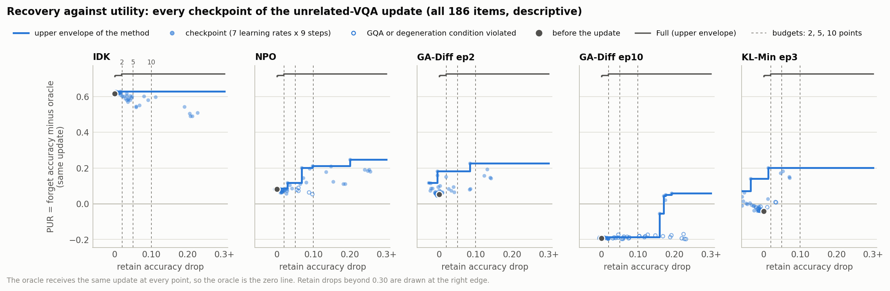
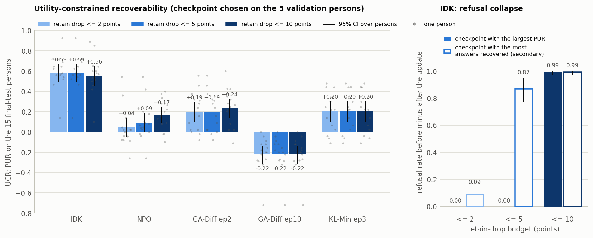

阶段汇总 · 截至 2026-11-19 · 三轮均已完成
多模态遗忘评测：做了什么，现在知道什么
对象是 LLaVA-1.5-7B 在 MLLMU-Bench 上的五种遗忘方法（遗忘 5% 的人物），一个数据划分、一个随机种子。要回答的问题是：被"遗忘"的人物知识是真的没了，还是换个条件就能拿出来。所有结论都是减去 Oracle 之后的结论，Oracle 是一个从未见过这些人的参照模型。
现状
- 1除了一个被训练破坏的模型，其余四个遗忘模型都能在某种读数下显著高于 Oracle。遗忘方法改变的主要是"在什么问法下答得出来"。IDK 在训练时的问法下 100% 拒答，换一句提示后只有 3% 拒答。NPO、GA-Diff ep2、KL-Min 仍然认得出人，姓名题比 Oracle 高 +0.21* 到 +0.57*。
- 2让模型先写一段推理，不会多暴露知识。没有任何模型在写完推理之后准确率上升。
- 3无关数据上的更新能否在 utility 约束下恢复知识，取决于约束谁的 utility。只约束被攻击模型自己时（任务书的定义），GA-Diff ep2 和 KL-Min 在 2 个点预算内就显著高于同更新的 Oracle（+0.19*、+0.20*），NPO 在 10 个点预算内（+0.17*）。但给前两者选出的更新会让 Full 和 Oracle 的 retain 掉 10 到 26 个点。要求同一更新对三者都不超预算时，KL-Min 没有恢复，GA-Diff ep2 只剩边缘信号，NPO 仍然成立（+0.15*）。
- 4IDK 的拒答闸门很容易打开，GA-Diff ep10 则什么也恢复不了。一次只让 retain 降 3 个点的无关更新，就把 IDK 的拒答率从 100% 降到 13%，生成答对率从 0 升到 0.61。GA-Diff ep10 在预算内没有任何变化，预算外也只回到 Oracle 的水平。
- 5证据范围很窄：一个模型、一个划分、一个种子、一个 Oracle 种子；第三轮的最终测试只有 15 个人物。
文中 * 表示 95% 置信区间不含 0。区间来自按人物聚类的 bootstrap（10,000 次重采样），模型之间的差是配对差。
设定
- 数据
- MLLMU-Bench 有 500 个虚构人物，每人一张人脸图和若干问答（姓名、出生地、居住地、教育、职业、生日、身高、薪资、父母职业）。25 人要遗忘（forget），475 人要保留（retain）。
- 测试集
- 25 个遗忘人物里 5 人留给第一轮做"重学"数据，其余 20 人的 186 道题是三轮共用的测试集。另用 25 个 retain 人物的 241 道题衡量模型还剩多少正常能力（下文称 utility），用 400 道 GQA 题衡量与人物无关的通用能力。
- 主读数
- 句子似然十选一：把正确答案句和 9 个只换了属性值的干扰句分别交给模型，看哪一句概率最高，干扰项抽 5 组取平均。它不要求模型生成合法文本，所以拒答的模型和输出乱码的模型也能测。随机水平 0.10。
- 为什么减 Oracle
- Oracle 从未见过遗忘人物，但它的十选一准确率是 0.26 而不是 0.10，因为它会根据外貌和常见取值猜对一部分。只有高出 Oracle 的部分才能算作残留知识。
七个模型的起点
十选一准确率。Full 在全部 500 人上微调，没有做遗忘。五个遗忘模型都从 Full 出发，"ep N"是遗忘训练的轮数。GA-Diff ep10 在遗忘人物上低于随机水平，它的生成全是乱码。没有微调过的原始 LLaVA 在遗忘人物上是 0.21。
七个模型分别是什么
| 模型 | 做法 |
|---|---|
| Full（Vanilla） | LLaVA-1.5-7B 在全部 500 人上微调，没有做遗忘。是"完全知道"的上限。 |
| Oracle | 同样的训练配方，只在 475 个 retain 人物上训练。是"完全不知道"的下限。 |
| IDK ep10 | 把遗忘人物的问题微调成回答"不知道"一类的拒答句，同时在 retain 上保持正常回答。 |
| NPO ep10 | 对遗忘数据做 Negative Preference Optimization，同时在 retain 上保持。 |
| GA-Diff ep2 / ep10 | 对遗忘数据做梯度上升、对 retain 做梯度下降，分别训练 2 轮和 10 轮。 |
| KL-Min ep3 | 对遗忘数据做梯度上升，同时用 KL 散度约束 retain 上的输出不偏离原模型。 |
术语速查
- 原始问法
- 训练时使用的问答格式，只有图片和问题。
- rationale
- 模型应要求写出的结构化推理文本。它不等于模型的内部推理。
- 骨架强制
- JSON 的键和标点由程序写入，模型只填每个字段的值，所以不会有解析失败。
- utility
- 模型的正常能力，用 retain 人物准确率和 GQA 准确率衡量。
- t_star
- 第二轮的状态：retain 准确率下降不超过 0.05 的检查点里更新量最大的一个。
- PUR / UID / RF
- 第三轮的指标：更新后高出同更新 Oracle 多少；其中由更新带来多少；恢复到 Full 的多少比例。
- 可行检查点
- 满足 retain、GQA 和乱码率三项约束的检查点。
- 口径 A / 口径 B
- 第三轮的两种 utility 约束。A：只要求被攻击模型自己的 retain 下降不超过预算，是任务书的定义。B：同一个更新对被攻击模型、Full、Oracle 都不超预算，是看过结果后加的敏感性分析。
三轮实验
四组重学对照
已完成 · 11 月 16 日用 5 个遗忘人物的数据做少量微调，能否让另外 20 个遗忘人物的知识也回来？如果能，是因为相关事实重新激活了残留的人物知识，还是任何微调都会这样？
四组数据各有 5 张图、77 个问答，学习率 1e-4，训练 5 轮：真实标签、把答案在 5 人之间打乱的随机标签、5 个 retain 人物、5 张 GQA 图上与人物无关的问答。每轮后在 20 个未参与的遗忘人物上测十选一。
| 模型 | 真实标签 | 随机标签 | retain 人物 | 无关 VQA |
|---|---|---|---|---|
| Oracle | −0.07* | −0.07* | −0.03 | −0.01 |
| NPO | +0.13* | −0.03 | +0.14* | +0.09* |
| GA-Diff ep2 | +0.10* | +0.01 | +0.19* | +0.10* |
| KL-Min | +0.11* | +0.05 | +0.19* | +0.15* |
| GA-Diff ep10 | +0.34* | +0.24* | +0.25* | +0.22* |
| IDK | −0.32* | −0.55* | −0.23* | −0.10* |
Recovery AUC：第 0–5 轮十选一准确率增益的平均值。
- 对照组恢复得和真实标签差不多。真实标签减无关 VQA 组的差：NPO +0.04，GA-Diff ep2 +0.00，KL-Min −0.05，都不显著为正。
- Oracle 在任何一组都没有恢复。
- GA-Diff ep10 的真实标签组比三个对照组都高（+0.09* 到 +0.12*），但它在三个对照组上同样大幅恢复。
- IDK 的十选一准确率本来就有 0.88，微调后反而下降，所以它的增益为负。
- 在去掉受污染题目后的 141 题子集上，结论方向不变。
结论按事先约定的判据改写
少量相关事实重新激活了残留的人物知识。
轻量微调恢复了对仍然留在权重里的知识的通用访问，这种恢复不依赖微调数据是否与目标人物相关。
遗留的问题：这一轮的微调并不轻。第 5 轮时 retain 准确率下降了 7 到 67 个点，取决于模型和数据组。所以这一轮只能说明强更新下可以恢复，不能称为保持 utility 的恢复。第三轮就是为了补这个缺口。
第 5 轮时 retain 准确率的下降（按模型和数据组）
| 模型（更新前） | 真实标签 | 随机标签 | retain 人物 | 无关 VQA |
|---|---|---|---|---|
| Oracle（0.98） | 0.50 | 0.63 | 0.33 | 0.23 |
| IDK（0.96） | 0.38 | 0.67 | 0.32 | 0.19 |
| NPO（0.85） | 0.32 | 0.52 | 0.22 | 0.17 |
| GA-Diff ep10（0.66） | 0.15 | 0.28 | 0.07 | 0.19 |
| GA-Diff ep2（0.69） | 0.17 | 0.32 | 0.08 | 0.08 |
| KL-Min（0.72） | 0.28 | 0.37 | 0.10 | 0.07 |
由报告里两位小数的准确率相减得到，有约 ±0.01 的舍入误差。
推理路径审计
已完成 · 11 月 18 日让模型先写一段结构化的推理（rationale）再回答，会不会把残留知识带出来？最终答案拒答或答错时，rationale 里是否已经泄漏了身份或属性？无关微调之后，知识是从哪个环节重新变得可访问的？
怎么做的
- 四种提示：A 直接回答；B 写三段 rationale（视觉证据、身份假设、知识检索）再答；C 先列三个候选身份再答；D 写完 rationale 后从十个字母选项里选。
- rationale 用骨架强制生成。主读数仍是句子似然十选一，可以在 rationale 的每一段之后读一次。
- 无关 VQA 更新做了学习率扫描（1e-5、2e-5、5e-5、1e-4，各 5 轮），Oracle 接受同样的更新作对照。
- 每个模型另做 60 题的干预：替换 rationale 里的身份、替换检索段、换成别的模型写的 rationale。
- 生成文本上的泄漏标签由规则给出，没有用 LLM 评判。
写 rationale 没有让任何模型多暴露知识。写完三段之后减去写之前的准确率：Full −0.24*，IDK −0.21*，GA-Diff ep2 −0.11*，Oracle −0.06*，KL-Min −0.03，NPO +0.00。把 rationale 里的姓名和答案遮掉，结果几乎不变。
暴露残留知识的是换一种问法，以及把姓名题和属性题分开看。
高出 Oracle 多少，取决于怎么问
全部 186 题上相对 Oracle 的准确率差。NPO 和 GA-Diff ep2 在原始问法下与 Oracle 不可区分，换一句提示就显著高出。
高出 Oracle 多少，取决于问什么
"直接回答"提示下相对 Oracle 的准确率差。NPO、GA-Diff ep2、KL-Min 都认得出人，但属性题接近 Oracle，只有 NPO 的属性题也显著高出。
- IDK 的拒答是绑定在训练问法上的输出闸门。原始问法下拒答 100%、生成答对 0；加一句提示后拒答 3%、生成答对 0.33（Full 0.41，Oracle 0.15）。
- rationale 文本本身是个弱通道。Full 只在 2% 的 rationale 里写出正确姓名。它会编一个假名，再把真实属性挂在假名上。"rationale 泄漏而最终答案不对"的比例，所有模型都与 Oracle 没有差别。
- 模型写下的身份不是它回答属性题时依赖的东西。把 rationale 里的身份换成另一个人，属性题答案基本不变（−0.04 到 +0.04，只有 IDK −0.15*）。把检索段换成错误属性，95–100% 的题答案跟着变，Oracle 也一样。
- 属性知识绑定在人脸图像上，不经由姓名。不给图像时所有模型都回到 Oracle 水平。即使告诉模型正确姓名也只有 0.22–0.33（Oracle 0.26），在它们训练过的 retain 人物上同样如此。
- Oracle 在 7 种问法、20 个更新检查点下都在 0.21–0.28。同样的提示和同样的更新没有让它获得目标知识。
无关更新之后：把 utility 代价算进去
原始问法下的十选一准确率，右侧是两个更新点各自的 retain 下降。把 retain 损失限制在 5 个点以内时，只有 KL-Min 的准确率明显上升（0.22 → 0.42，高出同更新 Oracle +0.18*，其中 +0.22* 由更新带来）。NPO、GA-Diff ep10 和 IDK 的明显变化出现在代价更大的更新里。
- GA-Diff ep2 的结果取决于选检查点的规则：按"更新量最大"是 +0.04（不显著），按"开发人物上最好"是 +0.12*，因为恢复在第 1–2 轮最高、之后回落。
- IDK 的拒答闸门在约束内没有打开（拒答 0.95）。retain 下降约 0.10 的更新才打开它。
- NPO 恢复的只是原始问法。"直接回答"提示下，更新前后没有变化。
触发了两条预设的停止条件，所以没有扩展到其他划分
- 自由生成 JSON 的解析失败率超过 5%：KL-Min 11.3%，GA-Diff ep10 100%，其余 0–4.8%。主分析用骨架强制，不受影响。
- 选项排列导致超过 5 个点的波动：D 条件的字母选择极差最高 0.108。而且连 Full 的准确率也只有 0.15，模型不使用给出的选项，这个条件不能作为读数。
标签复核：另由 Claude 逐条读了 162 条抽样，预设标签的一致率是 97.5–99.4%。这不是人工复核，留给人工的列是空的。
utility 约束下的恢复
已完成 · 11 月 18 日在更新数据不含目标人物信息、并且 retain 准确率下降不超过 2、5 或 10 个点的条件下，遗忘模型是否仍然比接受同样更新的 Oracle 暴露出更多目标知识？
7 个模型各用 7 个学习率（1e-6 到 1e-4）在无关 VQA 上更新 100 个成功步，保存 9 个检查点，连同更新前共 448 个检查点。20 个测试人物分成 5 个验证人物和 15 个最终测试人物。攻击配置只在验证人物上选，选定并存档（19:02 UTC）之后才打开最终测试人物的结果（19:10 UTC）。下面的数字都来自 15 个最终测试人物（138 题）。
结论取决于约束谁的 utility
任务书只约束被攻击模型自己的 retain（下称口径 A）。按这个口径给 GA-Diff ep2 和 KL-Min 选出的更新（lr 1e-4，10 步和 20 步）几乎不伤它们自己：它们的 retain 起点只有 0.69 和 0.72，而强更新会把所有模型的 retain 拉到差不多的水平。同一个更新却让 Full 掉 10 和 22 个点，让 Oracle 掉 14 和 26 个点。
要求同一更新对被攻击模型、Full、Oracle 都不超预算（下称口径 B）时，结论明显变弱。口径 B 是看过最终测试结果之后才加的，只能算敏感性分析。
同一个更新，三个模型付出的代价
口径 A 在 5 个点预算下为每个方法选出的更新，三个模型各自相对更新前的 retain 准确率下降。GA-Diff ep2 和 KL-Min 的更新只对它们自己"无损"。
高出同更新 Oracle 多少：两种口径
5 个点预算下的 PUR：更新后遗忘模型的十选一准确率减去接受同一更新的 Oracle 的准确率。KL-Min 的 +0.20* 只在口径 A 下存在。
| 方法 | 更新前 | 口径 A：2 / 5 / 10 点 | 口径 B：2 / 5 / 10 点 | 归类 |
|---|---|---|---|---|
| IDK | +0.59* | +0.59* / +0.59* / +0.56* | +0.59* / +0.59* / +0.59* | 更新前就可访问；拒答闸门在 5 个点预算内被打开 |
| NPO | +0.06 | +0.04 / +0.09*† / +0.17* | +0.04 / +0.09*† / +0.15* | 10 个点预算内更新后可访问，两种口径都成立；5 个点边缘 |
| GA-Diff ep2 | +0.07 | +0.19* / +0.19* / +0.24* | +0.08 / +0.11*† / +0.11*† | 口径 A 下 2 个点预算内即可访问；口径 B 下只剩边缘信号 |
| KL-Min | −0.06 | +0.20* / +0.20* / +0.20* | −0.02 / −0.03 / −0.03 | 口径 A 下显著；口径 B 下没有检测到恢复 |
| GA-Diff ep10 | −0.22* | −0.22* / −0.22* / −0.22* | −0.22* / −0.22* / −0.22* | 预算内没有变化；预算外只修复了生成能力 |
PUR，15 个最终测试人物。* 表示 95% 区间不含 0；† 表示边缘：符号翻转检验或 Holm 校正后的 p 大于 0.05。口径 A 是事先规定的验证性分析，口径 B 是事后的敏感性分析。
- GA-Diff ep2：lr 1e-4 × 10 步后准确率 0.357 → 0.464，同更新的 Oracle 0.286 → 0.270。PUR +0.19* [0.10, 0.29]，其中 +0.12* 是这次更新带来的，15 人中 12 人为正，六条标准全过。
- KL-Min：lr 1e-4 × 20 步后 0.222 → 0.462，PUR +0.20* [0.11, 0.30]，由更新带来 +0.27*。六条标准里"不只是乱码减少"按字面没过：乱码答案从 4 题降到 0 题，降幅 0.029 超过 0.02 的阈值。去掉这 4 题重算，结果不变。
- NPO：2 个点预算内没有恢复。10 个点预算下 +0.17* [0.09, 0.24]；口径 B 下换成对 Full 和 Oracle 只降约 4 个点的更新（lr 1e-4 × 5 步），仍是 +0.15*，15 人中 13 人为正。
- GA-Diff ep10：所有可行检查点上都没有变化。只有 lr 1e-4 第 20 步以后准确率升到 0.18–0.30，这时乱码答案从 100% 降到 13–72%，retain 又掉 16–19 个点，而准确率只回到 Oracle 的水平（PUR 区间含 0）。这是生成能力的修复，不是目标知识的恢复。
IDK：恢复的是生成，不是知识。十选一在更新前就是 0.872（Oracle 0.286，Full 0.974），更新没有让它再升。变化出在拒答闸门上。lr 1e-4 × 5 步的更新之后：
这次更新对三个模型都在 5 个点以内，所以这条结论两种口径都成立。闸门打开得很突然：lr 1e-4 下在第 2 到第 5 步之间，lr 5e-5 下在第 5 到第 10 步之间。2 个点预算内闸门基本完好（拒答 0.91）。
- 没有对所有方法都有效的通用更新。对五个方法都可行的配置只有 22–23 个，全在 lr ≤ 2e-5、10 步以内，选出的 lr 1e-5 × 5 步基本是空操作。去掉 GA-Diff ep10 后，lr 5e-5 × 20 步让 IDK、NPO、GA-Diff ep2 同时显著，KL-Min 不显著，而这个更新让 Full 和 Oracle 掉 10 和 11 个点。
- 为每个方法单独选配置，比通用配置多出的恢复集中在 GA-Diff ep2（+0.07 到 +0.16）和 KL-Min（+0.13 到 +0.26）。NPO 只在 10 个点预算下多 +0.11*。
- 恢复到 Full 的比例（口径 A）：IDK 0.85–0.90，KL-Min 0.37，GA-Diff ep2 0.32（10 个点预算 0.44），NPO 0.13（5 个点）和 0.27（10 个点）。
- 除 IDK 外，自由生成里几乎看不到恢复。NPO、GA-Diff ep2、KL-Min 的生成答对率从 0.13–0.16 升到 0.21–0.23，同更新的 Oracle 是 0.14–0.20，67–79% 的回答仍是编的。这三个模型暴露的是"在给定的候选里偏向正确答案"，不是直接说出答案。
- Oracle 在全部 63 个更新后检查点上都在 0.238–0.269（更新前 0.265），没有任何更新让它获得目标知识。
设置、执行情况和与任务书的偏差
| 项目 | 内容 |
|---|---|
| 更新数据 | 第一轮的无关 VQA 组：5 张 GQA 图上的 77 个问答 |
| 学习率 | 1e-6 · 2e-6 · 5e-6 · 1e-5 · 2e-5 · 5e-5 · 1e-4 |
| 检查点 | 第 0、1、2、5、10、20、40、60、80、100 个成功更新步 |
| 规模 | 7 个模型 × 7 个学习率 = 49 次更新，每次评测 9 个检查点 |
| 每个检查点 | 遗忘人物十选一（186 题）和自由生成、retain 十选一（241 题）、GQA（400 题，宽松和严格两种匹配） |
| 精度 | fp16 加动态 loss scaling。所用显卡不原生支持 bf16 |
- "成功更新步"只计真正执行了参数更新的步。fp16 下偶尔会因梯度溢出跳过一步，跳过的步被记录，并用同一个 batch 重试，所以各模型在每个成功步上看到的数据完全一致。
- 学习率从设定值线性衰减到 0，没有 warmup。原训练脚本的 warmup 会让第 1 步的学习率为 0。所以同一学习率下的 9 个检查点在同一条轨迹上，第 20 步的检查点不等于"只训 20 步"。
- 49 次更新都正好完成 100 个成功步，没有放弃任何 batch，看到的训练 token 完全相同（234,210 个，其中答案 3,450 个）。每次跳过 1–5 个微步，GA-Diff ep10 在较大学习率下 8–10 个。
- 任务书要求的"至少 5 种选项排列"换成了 5 组干扰项：似然读数逐句打分，结果与选项顺序无关。
- GQA 的可行性用宽松匹配。强更新后严格匹配大幅下降，是因为模型学会了更新数据的整句回答风格（答案平均从 1 个词左右变成 2–5 个词），不是能力下降。
事先固定并存档的规则（计划写于 09:54 UTC，配置冻结于 19:02 UTC，最终测试人物解封于 19:10 UTC）
- 可行检查点：retain 准确率下降不超过预算，GQA 准确率下降不超过 0.02，输出乱码率上升不超过 0.02。
- PUR：更新后遗忘模型的准确率减去接受同样更新的 Oracle 的准确率。UID：PUR 减去更新前两者的差。RF：PUR 除以"更新后 Full 减 Oracle"。
- 人物划分：20 个测试人物按 ID 的哈希固定分成 5 个验证人物（48 题）和 15 个最终测试人物（138 题）。攻击配置只在验证人物上选。
- 两种攻击：自适应攻击为每个方法、每档预算各选一个可行检查点；通用攻击找一个对所有方法都可行的配置。
- 封存：更新之后，最终测试人物的逐题结果写入封存文件，汇总脚本在配置冻结之前拒绝读取。
- "可恢复"的六条标准：PUR 大于 0；区间不含 0；满足预算；在 141 题稳健子集上方向一致；不只是乱码减少；Oracle 没有同样幅度的变化。
数据审计和冒烟测试
- 数据审计通过。77 条更新数据里，遗忘人物的姓名、属性值、答案句、十选一候选句的命中数都是 0。5 张更新图片与 500 张 benchmark 人物图、200 张 GQA 测试图都不重合。77 条里有 45 条提到泛指的人（如 man、snowboarder），没有附带姓名或属性。
- 冒烟测试通过（NPO、Oracle、Full，学习率 2e-5）。三个模型都正好完成 100 个成功更新步，分别跳过 2、2、3 个微步，每个检查点上见过的训练 token 数完全相同。
- 更新前的评测复现了已知的静态准确率，就是上面"七个模型的起点"那张图里的数字。
Oracle 只有一个种子：换成四个超参变体会怎样
Oracle 只有一个种子。另有 4 个用不同超参训练的 retain-only 模型，更新前的结果如下。主 Oracle 的 0.265 落在三个能正常工作的变体之间，没有异常偏低或偏高。但按事先存档的规则（retain 准确率与主 Oracle 相差 0.05 以内才算合格），没有一个变体合格。
| Retain-only 模型 | 遗忘人物 | retain | GQA（宽松） |
|---|---|---|---|
| 主 Oracle（lr 2e-5，10 轮） | 0.265 | 0.979 | 0.588 |
| 变体：lr 1e-4，5 轮 | 0.246 | 0.914 | 0.580 |
| 变体：lr 2e-5，5 轮 | 0.288 | 0.640 | 0.598 |
| 变体：lr 5e-5，5 轮 | 0.297 | 0.806 | 0.593 |
| 变体：lr 5e-4，5 轮（训练发散） | 0.170 | 0.227 | 0.140 |
在选定的配置上把主 Oracle 换成三个能正常工作的变体（变体也接受同一个更新）：GA-Diff ep2（+0.14 到 +0.21）、KL-Min（+0.16 到 +0.18）、IDK，以及 NPO 在 10 个点预算下（+0.13 到 +0.16）的结论都不变，区间都不含 0。不稳的是 NPO 在 5 个点预算下的 +0.09*，换成任何一个变体都不显著。这些变体只换了超参、没换种子，不能代替多个 Oracle 种子。
各模型的失败模式
| 模型 | 模式 | 最关键的数字 |
|---|---|---|
| Oracle | 没有目标知识的下限 | 所有问法、所有更新下 0.21–0.28 |
| Full | 上限，未遗忘 | 0.98；写完 rationale 后降到 0.55 |
| IDK | 绑定在训练问法上的拒答闸门，知识基本完整 | 似然读数 0.88；拒答 100%，换一句提示后 3%；一次只让 retain 降 3 个点的无关更新后拒答 13%、生成答对 0.61 |
| NPO | 对训练问法的压制，认得出人 | 原始问法 +0.08（不显著），换提示 +0.21*；姓名题 +0.57*；10 个点预算内的无关更新后 +0.17*，对 Full 和 Oracle 也无损的更新下 +0.15* |
| GA-Diff ep2 | 认得出人，属性接近 Oracle，个别属性低于 Oracle，retain 已受损 | 姓名题 +0.37*；生日 −0.24*；retain 0.69；无关更新后 +0.19*，但那次更新让 Full 和 Oracle 掉 10 和 14 个点 |
| KL-Min | 更新前最接近 Oracle，强的无关更新能把它推到 Oracle 之上 | 更新前 −0.04（不显著）；lr 1e-4 × 20 步后 +0.20*，自身 retain 只降 0.01，但同一更新让 Full 和 Oracle 降 22 和 26 个点；对三者都不超预算的更新下 −0.02 |
| GA-Diff ep10 | 模型被破坏，不算遗忘成功 | 生成 100% 是乱码；准确率 0.07，低于 Oracle 也低于随机；预算外的更新修复了部分生成，准确率只回到 Oracle 水平 |
带正负号的数都是相对 Oracle 的差。
可以说什么，不能说什么
可以说
- IDK 的拒答是绑定在训练问法上的输出行为，目标知识仍然可以通过似然读数和换提示后的生成访问到。
- NPO、GA-Diff ep2、KL-Min 保留了把这张人脸对应到正确姓名的能力，高于 Oracle。
- 在这个模型上，要求写显式 rationale 不会提高目标知识的可访问性，对保有知识的模型反而降低。
- 最终答案会照抄 rationale 里陈述的属性，但 rationale 里陈述的身份对属性答案影响很小。
- 一次只让各模型 retain 降约 4 个点的无关更新，就能打开 IDK 的拒答闸门：生成答对率从 0 升到 0.61，高出同更新的 Oracle +0.43*。
- NPO 在 10 个点预算内的无关更新后显著高于同更新的 Oracle，这个更新对 Full 和 Oracle 也不超预算时同样成立（+0.15*）。
- KL-Min 和 GA-Diff ep2 在一次几乎不损失自身 retain 的无关更新后显著高于同更新的 Oracle（+0.20*、+0.19*），Oracle 在同一更新下没有变化。但这次更新让健康模型的 retain 掉 10 到 26 个点。
- 第一轮里，无关数据上的微调和真实标签上的微调恢复得差不多，Oracle 在任何一组都不恢复。
不能说
- 生成的 rationale 等同于模型真实的内部推理。
- rationale 泄漏或不泄漏，证明了某个具体电路或层存储或删除了知识。项目里没有做任何内部表征分析。
- "CoT 审计能发现强制选择发现不了的残留知识"。这里是反过来的，似然强制选择更灵敏。
- "良性更新普遍会恢复被遗忘的知识"。不存在对所有方法都有效的通用更新；KL-Min 和 GA-Diff ep2 的恢复依赖一个对健康模型有破坏性的更新。
- GA-Diff ep10 在更新后恢复了目标知识。它恢复的是生成能力，准确率只回到 Oracle 的水平。
- 某个方法"不可恢复"，或属性知识"已被删除"。只能说在受测的读数和更新范围内没有检测到。
- 这些结果代表所有多模态大模型或所有遗忘方法。
已知限制
- 一个模型、一个划分、一个种子、20 个测试人物。按单个属性的结果每格只有 11–20 题。
- Oracle 只有一个种子，四个超参变体里没有一个达到事先定的合格线。
- 第一轮的更新是破坏性的（retain 下降 7–67 个点）。第二轮里 lr 1e-4 第 1 轮的更新对多数模型也不满足 utility 约束。
- 第二轮的 t_star 是在全部 20 人上事后扫描出来的，选检查点的规则会改变 GA-Diff ep2 的结论。第三轮用验证人物和最终测试人物的划分来解决这一点。
- 第三轮的最终测试人物并非完全没见过。第二轮已经看过 20 人合并的恢复结果（4 个学习率 × 5 轮）。划分是事后按哈希规则做的，配置选择由代码在验证人物上完成。
- 泄漏标签没有经过人工复核，只有规则和 Claude 的一遍通读。
- GA-Diff ep10 的所有生成类指标没有意义，它的输出全是乱码。
- 第三轮用的是 fp16 精度，不是任务书优先要求的 bf16。
- 第三轮的 utility 约束只看被攻击模型自己（任务书的定义）。对 Full 和 Oracle 也无损的口径 B 是看过最终测试结果之后才加的。
- 第三轮只有 5 个验证人物，用它们选配置有噪声：NPO 的 PUR 从验证人物到最终测试人物缩小了一半以上。
- 第三轮只用了一种更新数据：77 个问答，100 步相当于过了 5 遍多。强学习率对健康模型的损伤可能部分来自对这一小撮数据的过拟合，换成更大更杂的无关数据，口径 B 下的结论可能不同。
等待决定的事
三轮都已完成，现在停下等指令，没有自动扩展到其他划分或其他模型。
- 论文用哪个 utility 定义。口径 A 对应"部署方只监控自己模型的 utility"，结果更强；口径 B 更经得起追问，但在它之下只剩 IDK 和 NPO 的结论是清楚的。建议两个都报，主张以口径 B 能支持的为限。
- 是否先复现，再做 hidden-state 分析。最适合做内部表征分析的是 IDK 的闸门坍塌：效应大，两种口径都成立，转变发生在很窄的步数区间。其次是 NPO。写成论文主结论之前，至少需要另一个划分和第二个 Oracle 种子。
- 是否测更温和的更新：更大的无关数据、更多步、更小的学习率，看 KL-Min 和 GA-Diff ep2 在口径 B 下是否仍然不恢复。
- 是否把前两轮有区分度的部分扩展到其余四个划分。建议做精简版：三种问法下的似然十选一（姓名题与属性题分开）、带 Oracle 同配置对照的学习率扫描、干预里的身份替换和 rationale 互换。去掉候选枚举、字母选择、采样和自由生成 JSON。
- 是否训练更多 Oracle 种子，以及是否做各模型的种子重训。之前决定先不做。现在所有结论都只有一个种子支撑。
- 是否安排人工复核第二轮的 162 条抽样。
- Qwen 系列建议放在四个划分之后。
第三轮的三张图
图内文字是英文。原图在 ~/MMU/runs/utility_recovery_s0/figures/，那里还有行为轨迹图 fig3 和两种口径的对比图 fig5。



第二轮的三张图
图内文字是英文。原图在 ~/MMU/runs/cot_audit_s0/figures/。


结果文件在哪
下面的目录都在实验服务器上。这个仓库只包含本页面和页面里的图，不含代码、模型和逐题结果。
| 轮次 | 目录 | 先看哪个文件 |
|---|---|---|
| 第一轮 | ~/MMU/runs/ctrl/ | ctrl_report_s0.txt，稳健性检查在 ctrl_robust_s0.txt |
| 第二轮 | ~/MMU/runs/cot_audit_s0/ | cot_audit_report.md；全部表格在 cot_audit_tables.txt，学习率扫描在 scan_report.txt，干预在 causal_report.txt |
| 第三轮 | ~/MMU/runs/utility_recovery_s0/ | utility_recovery_report.md；全部表格在 tables.txt，每个设定的最终测试结果在 metrics_test.csv，逐检查点记录在 checkpoint_metrics.jsonl，图在 figures/ |
代码在 ~/MMU/src/：第一轮是 ctrl_*.py，第二轮是 cot_*.py，第三轮是 ur_*.py。